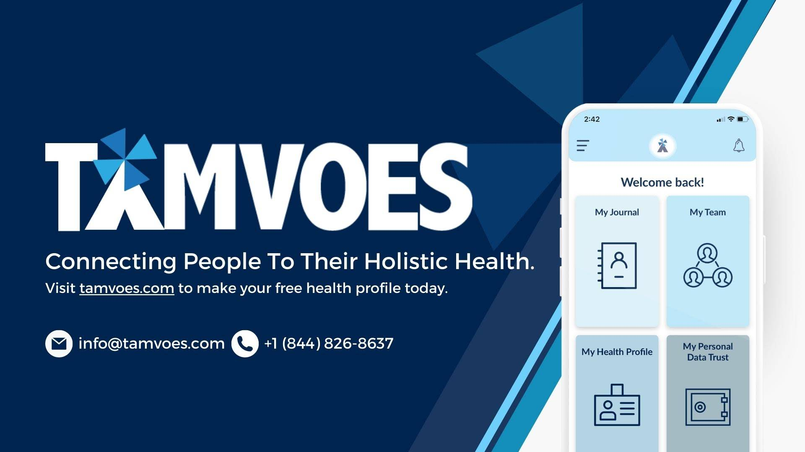
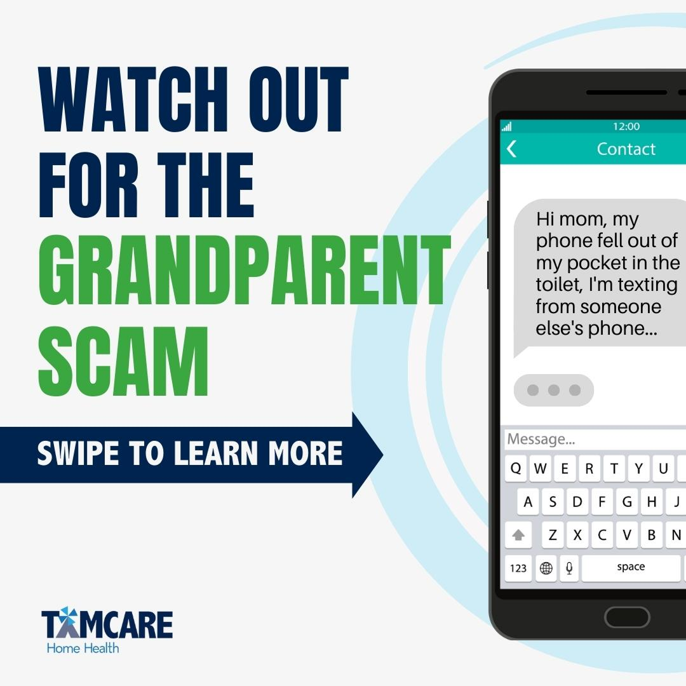
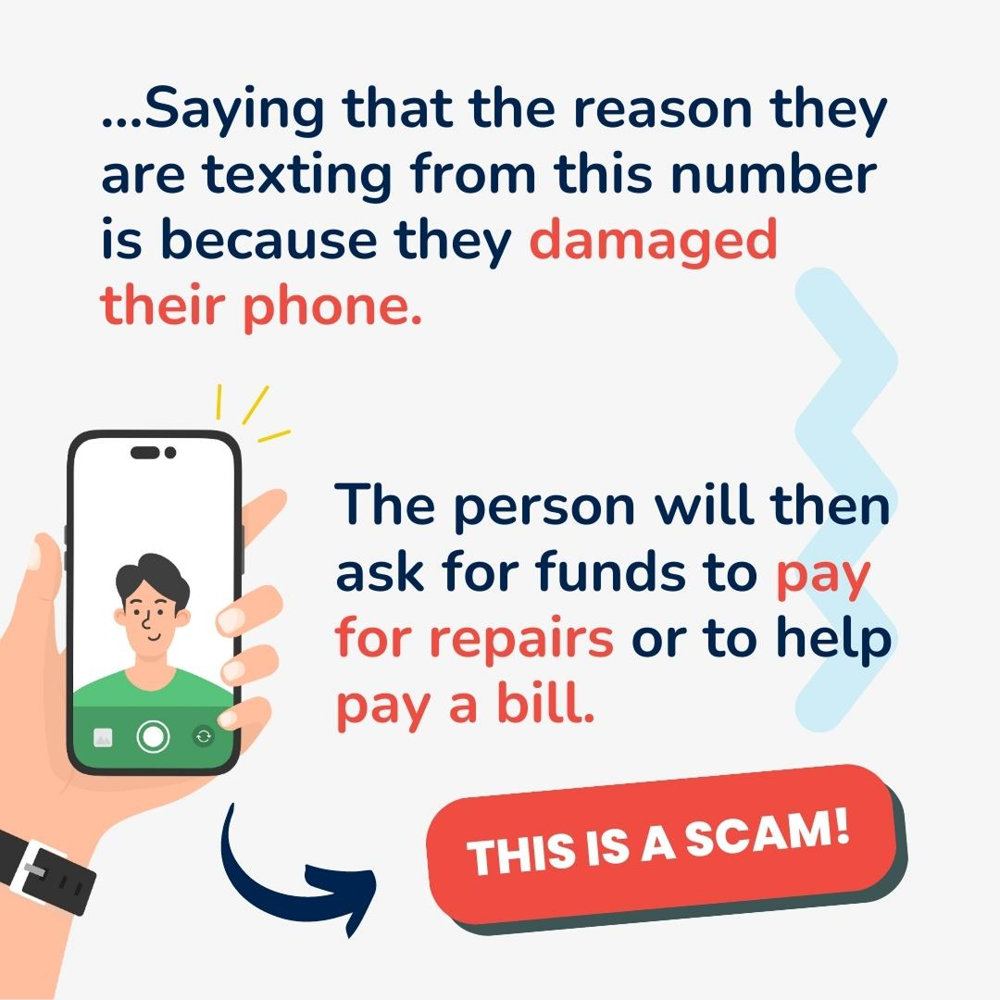
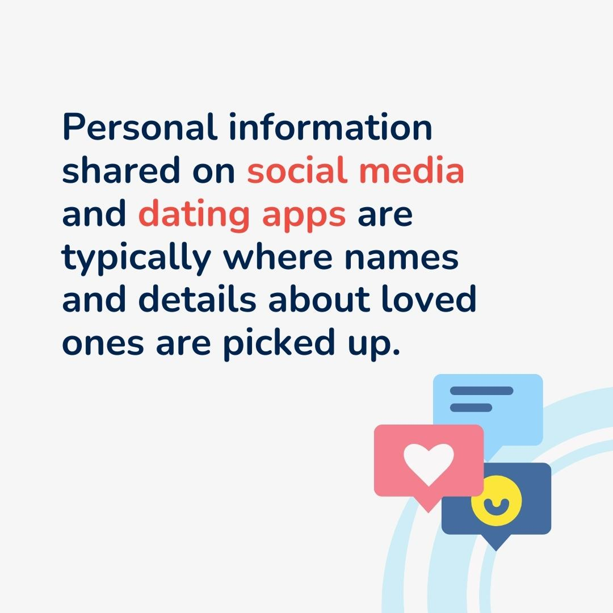
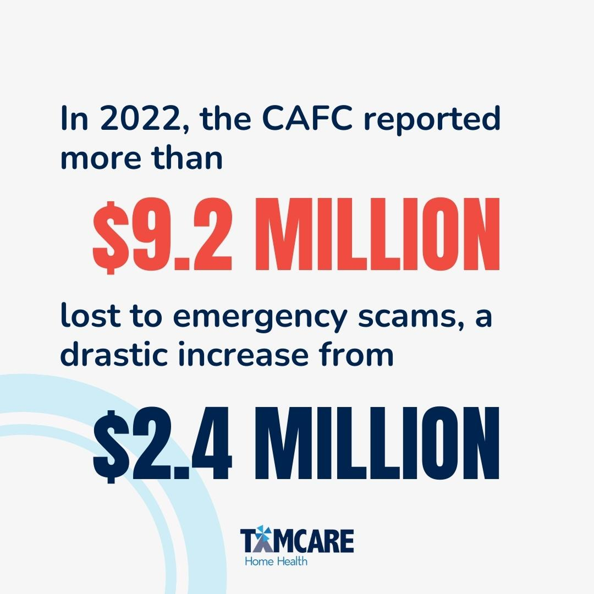
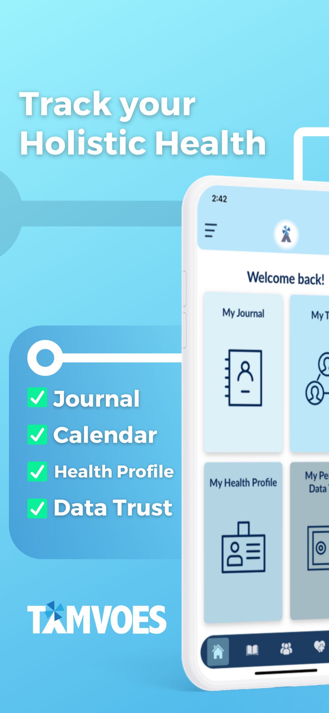
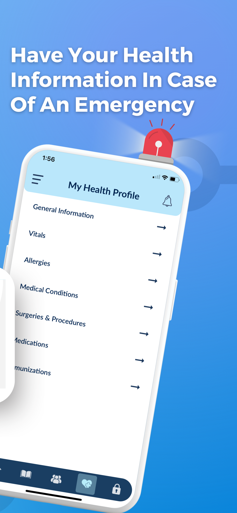
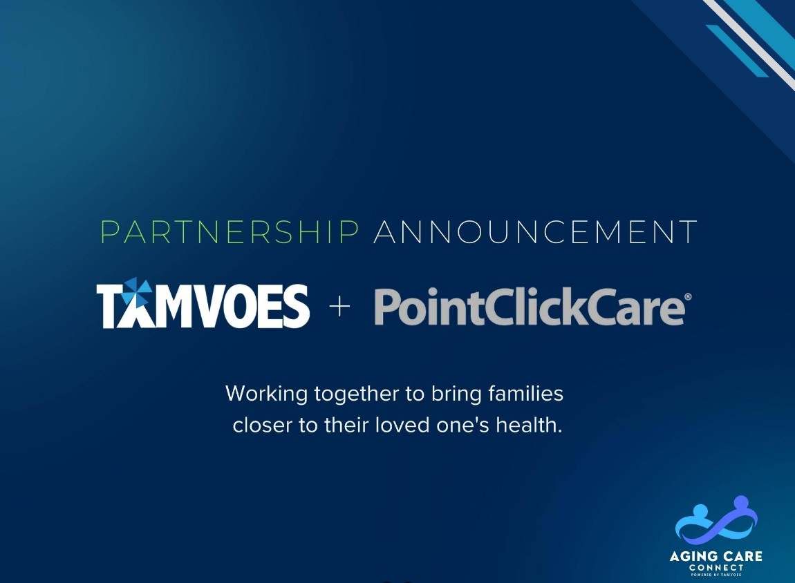
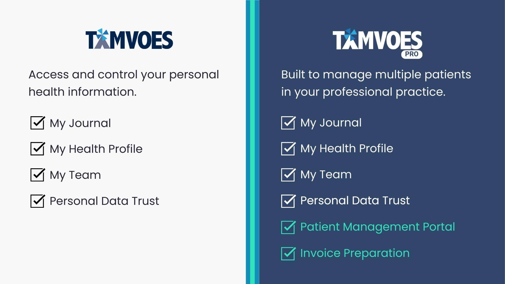

Branding a SaaS Health Platform with TAMVOES

Starting in Social Media Marketing
I joined TAMVOES as a Social Media Marketing Specialist through my co-op program at the University of Waterloo. My role began with creating graphics and social media content to increase the brand’s visibility online. At the time, TAMVOES was already established as an online health wallet, while the company was also expanding into a new in-home senior care brand called TAMCARE Home Health Inc.
My early work focused on supporting multiple digital brands, including TAMVOES, TAMCARE Home Health, and CANDOO Health. I created social media visuals, helped strengthen brand consistency, and supported organic marketing efforts that were more cost-effective than relying only on paid advertising.
Building TAMCARE’s Website and Search Visibility
One of my largest projects was helping build the TAMCARE Home Health website from the ground up. This required me to learn and apply WordPress, HTML, CSS, and SEO practices so the brand could become searchable and credible online.
Before this work, the home care business was difficult to find on Google, even when searching the company name directly. I helped improve search visibility through keyword targeting, Google Business Profile setup, customer and worker reviews, page indexing through Google tools, and linking the website to the business profile.
This work helped shift TAMCARE from relying mainly on referrals to gaining a stronger online presence. By making the website searchable and improving local SEO, the site became a meaningful source of business traffic and helped the company appear more competitively for searches related to home care in the Waterloo area.




Connecting Paid Search and Organic Strategy
Alongside organic SEO, I also supported Google Search Ads to help increase the brand’s visibility on search engines. Paid search helped bring attention to the business quickly, but the longer-term value came from building a stronger organic presence through SEO, social media, and Google Business optimization.
This experience helped me understand the difference between short-term paid visibility and sustainable organic growth. It also showed me how web development, search optimization, reviews, and social media can work together to build trust for a newer brand.


Transitioning Into Marketing Analysis
Halfway through my eight-month co-op term, my role shifted toward marketing analysis. This gave me my first experience using data-driven approaches to market a SaaS product. TAMVOES functioned as an online health wallet where users could store, manage, and bring their personal health history to appointments through the platform’s four-pillar structure.
I worked with platform data collected through an Azure connection and visualized it in Power BI to better understand user behaviour. This helped identify which features were being used most often, which user segments were engaging with the platform, and where the product had the strongest value for different audiences.
Using Data to Support SaaS Growth
One important use case involved TAMVOES’ partnership with PointClickCare, which brought the platform into long-term care environments. By analyzing feature usage during pilot activity, I helped the team understand which parts of TAMVOES were most valuable for long-term care users and how that information could support future marketing and sales conversations.
These insights helped shape outreach to executives at organizations such as Extendicare and Chartwell Retirement Residences. Instead of only pitching the software generally, the team could point to usage patterns and feature engagement to show how TAMVOES could support long-term care facilities and their residents.

Supporting Outreach and Sales Automation
I was also involved in outreach for this initiative, directly messaging executives and helping book introductory meetings for the team. To support this process, I helped set up automated outreach workflows using Apollo.io, including message sequences, follow-ups, and touchpoints designed to move prospects toward a conversation with the sales team.
This work combined automation with a human sales approach. The workflows helped scale outreach, while personalized communication helped create opportunities for real conversations about the pro version of TAMVOES, which was a SaaS product designed for businesses.

Outcome
What began as a Social Media Marketing Specialist role grew into a broader digital marketing and marketing analysis position. Through my work at TAMVOES, I built experience across social media design, brand development, WordPress website creation, HTML, CSS, SEO, Google Business optimization, paid search advertising, Power BI reporting, Azure-connected data analysis, SaaS marketing, executive outreach, and sales automation.
This experience gave me the opportunity to combine creativity, technical skill, and data-driven strategy while contributing to stronger brand visibility, improved search performance, more informed product marketing, and growth-focused outreach for both a health technology platform and an in-home senior care business.